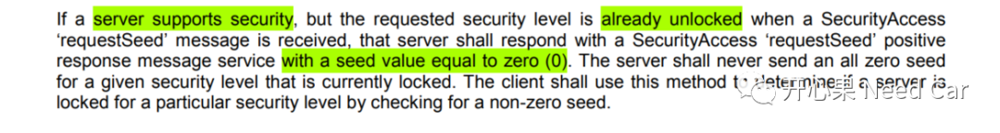
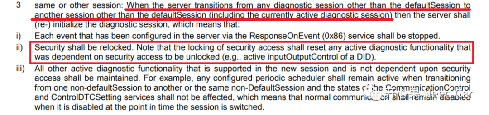

开心果 Need Car · 2022-11-13T14:07:00+08:00 · 微信原文
做诊断开发的朋友，对Security Access service（0x27）服务，应该最熟悉不过。但是，有时就是这样让我们觉得熟悉的服务，遇到问题时，还是会限于自己的固有认知（说白了，就是理解不透彻，说的就是我自己）。关于0x27服务的随机种子生成，前文聊过，可以参考前文Uds诊断：$27服务，ECU如何产生随机种子。本文，针对0x27服务，深聊一下其与Diagnostic Session Control（0x10）、Security之间的一些关系。这里先抛两个问题：
0x27服务的Seed，何时可以返回全0？
非默认会话跳转相同非默认会话（eg:10 03再次进入10 03），需要重新解锁吗？
1、0x27服务的Seed，何时可以返回全0？
#Sending Request: 10 03Complete Response:50 03 00 32 01 F4#Sending Request: 27 11Complete Response:67 11 21 94 83#Sending Request: 27 12 CC 1D E7Complete Response:67 12#Sending Request: 10 03Complete Response:50 03 00 32 01 F4#Sending Request: 27 11Complete Response:67 11 00 00 00
如上的数据流，Line10，Server响应Seed的时候，Seed的值全部为0。对于如上的数据流，有问题吗？答：有。分析另一个数据流，数据流二如下所示：
#Sending Request: 10 03Complete Response:50 03 00 32 01 F4#Sending Request: 27 11Complete Response:67 11 21 94 83#Sending Request: 27 12 CC 1D E7Complete Response:67 12#Sending Request: 27 11Complete Response:67 11 00 00 00

如上的解释是说：如果Server已经处于解锁状态（Unlock）,在此会话下，再次收到Client的种子请求（本例：27 11），可以返回0，以此告知上位机，当前会话已经解锁。如上的讨论中，为什么"数据流一"是不对的呢？搞清楚这个问题，需要讨论第二个问题。
2、非默认会话再次跳转相同非默认会话，需要重新解锁吗？
对于这个问题，看一下14229-1给的解释，如下所示：

解释：
往期精彩回顾